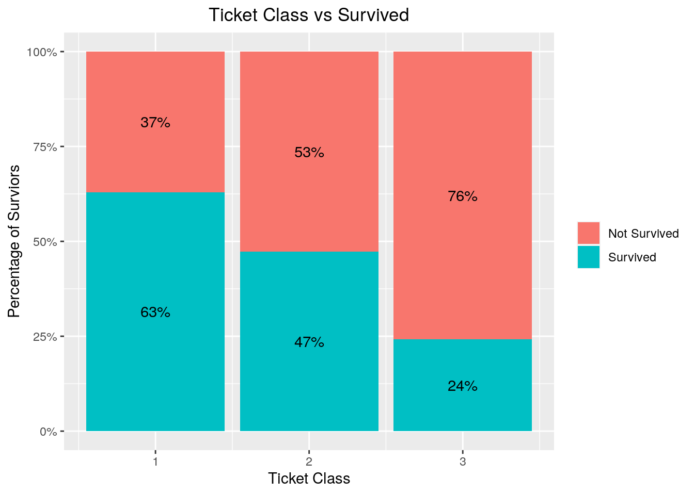
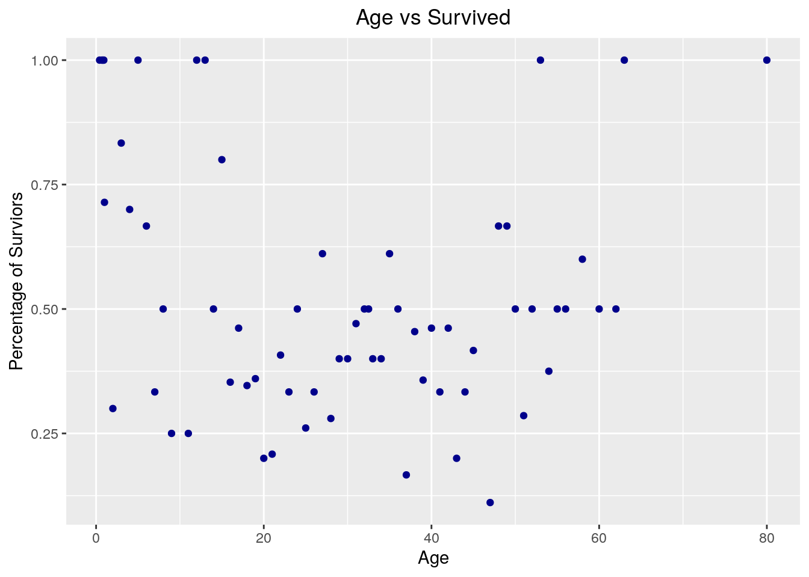
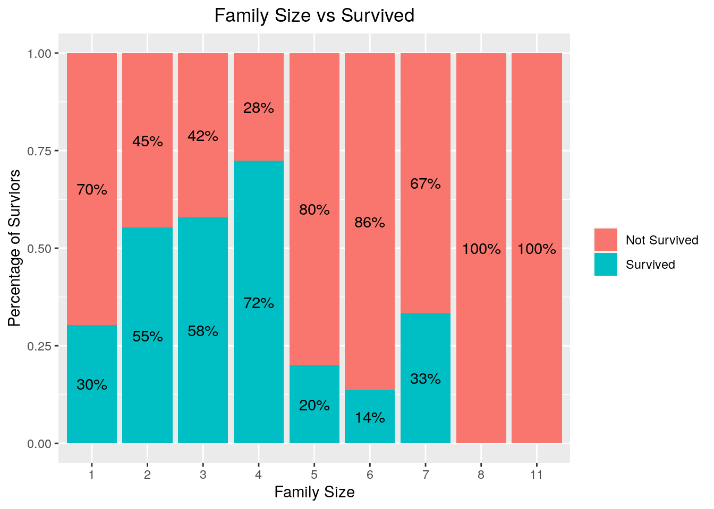
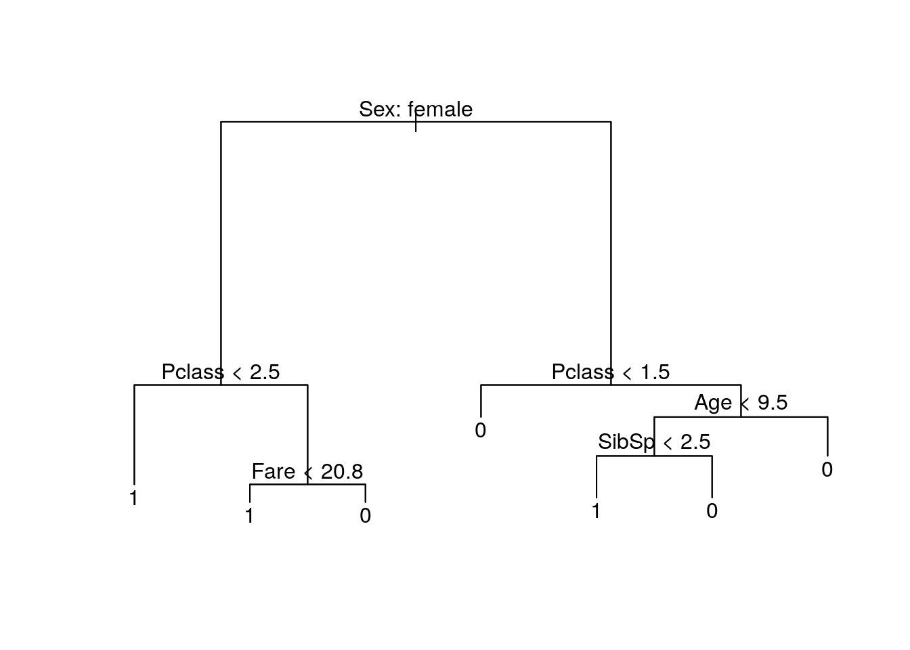
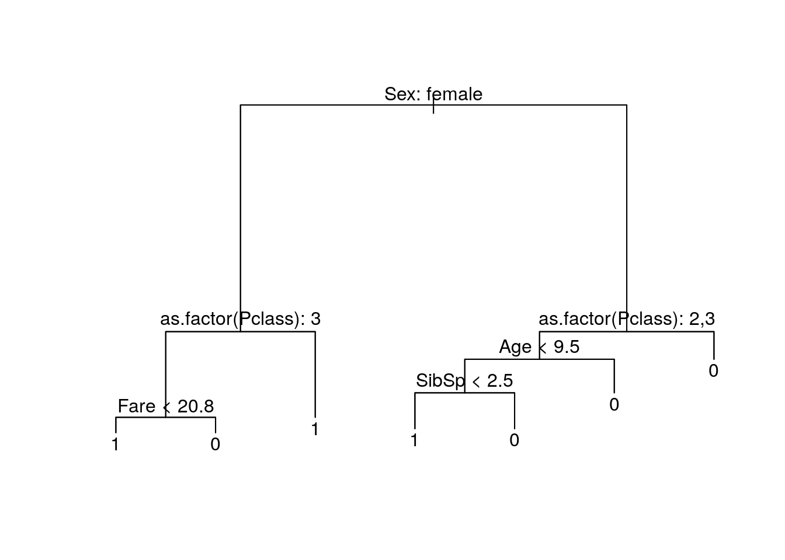
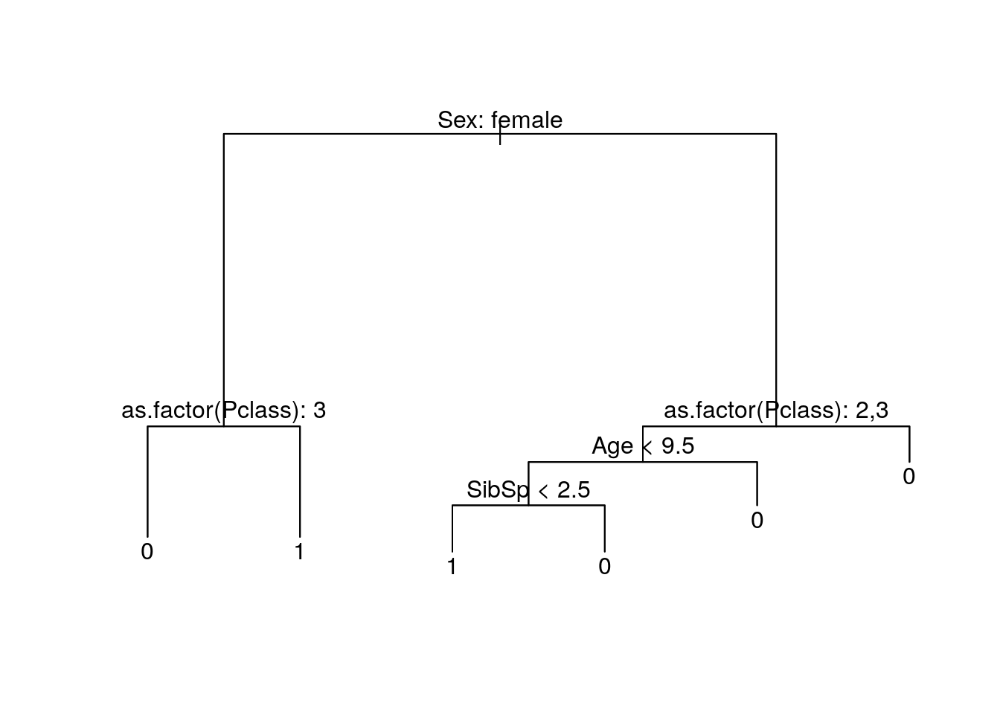

In this notebook, I’m gonna use decision tree to predict the survivals of Titanic passengers. My last attempt was building a logistic regression
Let’s import these packages.
library(tidyverse)# metapackage of all tidyverse packages
library(dplyr)
library(tree)
library(ggplot2) # visualizationtrain <- read.csv("../input/titanic/train.csv")
test <- read.csv ("../input/titanic/test.csv")The competition gave us two sets of data: train set and test set. Let’s import them into two variables train and test.
dim(train)## [1] 891 12Train set contains 891 observations and 12 variables.
| Variable Name | Description |
|---|---|
| Survived | Survived (1) or died (0) |
| Pclass | Passenger’s class |
| Name | Passenger’s name |
| Sex | Passenger’s sex |
| Age | Passenger’s age |
| SibSp | Number of siblings/spouses aboard |
| Parch | Number of parents/children aboard |
| Ticket | Ticket number |
| Fare | Fare |
| Cabin | Cabin |
| Embarked | Port of embarkation |
This is the list of variables in this dataset. Test set doesn’t contain Survived.
Our dependent variable is Survived.
Let’s look at some of the variables. Pclass stands for Ticket Class, where 1 stands for first class, 2 for second and 3 for third.

First class ticket holders have the highest survivor rate, around 63%, where third class people have 24% A reason for this might be because ticket class also relates to social class back then.
## Warning: Removed 1 rows containing missing values (geom_point). There is no clear correlation between Age and Survived. Kids and teenagers have higher survival rate, while that of people between 20 and 60 years old is lower. I can make a guess that kids and teenagers travel with family, and family might have a higher survival rate. Let’s look at Parent/Children to see if this is true.
This is a variable indicate how many parent/children a passenger has. Combining with Sib/Sp, we can find out how big is a family size. In another word, family size = parent/children + sibling/spouse + 1. The 1 accounts for the passenger his/herself.9

It seems that Famiy size does play a part in surviving. Family tends to have a higher surviving rate than people traveling alone, but only small families which has less than five members. Big families tend to not surviving, due to the size of the family. There is one family with 11 people which has no survivors.
After going through some variables, it’s time to fit our tree.
First, let’s fit a decision tree with all variables. We will not include categorical variables with too many levels, i.e too many things. Additionally, Passenger ID won’t be r elevant.
tree.fit <- tree(as.factor(Survived)~.-Ticket - Name-PassengerId-Cabin, data=train)
summary(tree.fit)##
## Classification tree:
## tree(formula = as.factor(Survived) ~ . - Ticket - Name - PassengerId -
## Cabin, data = train)
## Variables actually used in tree construction:
## [1] "Sex" "Pclass" "Fare" "Age" "SibSp"
## Number of terminal nodes: 7
## Residual mean deviance: 0.7975 = 563.9 / 707
## Misclassification error rate: 0.1737 = 124 / 714plot(tree.fit)
text(tree.fit, pretty=0)
Ticket class was treated as a numerical variables, which is not, so let’s fit the tree again.
tree.fit <- tree(as.factor(Survived)~.-Pclass +as.factor(Pclass)-Ticket - Name-PassengerId-Cabin, data=train)
summary(tree.fit)##
## Classification tree:
## tree(formula = as.factor(Survived) ~ . - Pclass + as.factor(Pclass) -
## Ticket - Name - PassengerId - Cabin, data = train)
## Variables actually used in tree construction:
## [1] "Sex" "as.factor(Pclass)" "Fare"
## [4] "Age" "SibSp"
## Number of terminal nodes: 7
## Residual mean deviance: 0.7975 = 563.9 / 707
## Misclassification error rate: 0.1737 = 124 / 714plot(tree.fit)
text(tree.fit, pretty=0)
Let’s interpret this tree. This is a decision tree. You read this tree starting from the top. For every level, the observation/passenger will pass through a check, if the check is true, they go down a level using the left route. Otherwise, they use the right route.
The first level here is whether a passenger is a female. If she is, we are going to check whether her ticket is a third/lower class. If it’s not, she survives. If it is, and her fare is less than 20.8, then she survives. If her ticket is lower class, and her fare is more than 20.8, she might not survive.
This is quite hard to explain. I can only think that the ticket class, and also the class fare, reflects the seat position. From what I know about boats, passengers with higher ticket classes stays in the upper deck. They would have more time to prepare and also gets higher access for lifeboats. The first class might contain people with higher status, like a duke or a countess, so these people might be saved first.
This tree looks good with 7 nodes, but let’s find out if they can be reduced more with decreased deviation
set.seed(567)
(cvtree <- cv.tree(tree.fit, FUN = prune.tree, K = 10))## $size
## [1] 7 6 3 2 1
##
## $dev
## [1] 652.9537 634.0593 685.1842 756.0336 966.8567
##
## $k
## [1] -Inf 14.47245 30.51568 80.81551 213.81576
##
## $method
## [1] "deviance"
##
## attr(,"class")
## [1] "prune" "tree.sequence"bestsize <- cvtree$size[which.min(cvtree$dev)]
bestsize## [1] 6We will use cross validation to find the number of nodes with the least amount of deviation. The optimal number of nodes are 6. Prune the tree and plot it again.
prune <- prune.tree(tree.fit,best=bestsize)
plot(prune)
text(prune, pretty=0)
This is our most optimal tree. We will use this model with the test set, and put it into submission
prediction <- predict(prune,newdata=test,type="class")
solution <- data.frame(PassengerID = test$PassengerId, Survived = prediction)
write.csv(solution, file = 'solution.csv', row.names = F)